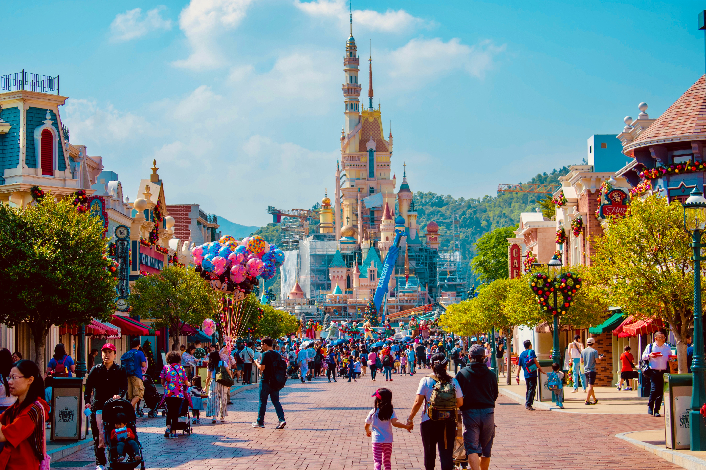

미국 캘리포니아주 남서부 애너하임에 있는 세계적인 유원지, 만화영화 제작자 윌트 디지니가 로스앤젤레스 교외에 세운 대규모 오락시설이다.
개장 이후 총 입장자 수는 2억 명을 넘어섰으며 연간 입장자가 1,000만 명을 넘고 그 중 70%가 어른이다. 바깥 둘레를 산타페 철도가 돌고, 유원지 안에는 1890년대의 미국 마을을 재현한 '메인 스트리트 USA'를 중심으로 '모험의 나라', '개척의 나라', '동화의 나라', '미래의 나라' 등의 7개 구역이 테마별로 배치되어 있다.
그 중 모험의 나라는 큰 나무들이 울창하고 강물이 미로처럼 얽혀 있는 열대 정글로서 무시무시한 고대 신전과 타잔의 집 등에서 스릴 넘치는 모험을 즐길 수 있다. 또 개척의 나라에서는 서부극의 복장과 증기선, 골드러시 현장 등을 볼 수 있다. 잠자는 숲속의 공주가 있는 성의 성문을 지나 들어가면 동화의 나라에서 이상한 나라의 앨리스와 담보·피터팬 등을 만날 수 있으며, 미래의 나라에서는 공상과학영화 속의 주인공이 된 듯한 착각에 빠지게 된다.